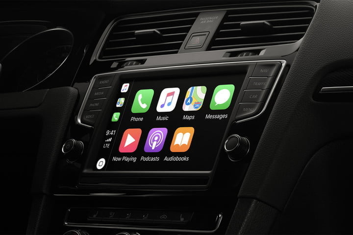

Recentlt my friend got a Honda CR-V and loved it, but she wasn't thrilled with the display on the media center. So we decided we look into adjusting things and making it more her style. We started by just checking the stock settings to see if there was anything we could do.
We were able to set the background color for the system. We were also able to pick a couple "Themes" that didn't seem to change anything. So, noticing that there is a USB plug in the center console, I decided to investigate and see if there was something else we could do.
In my research I discovered that you could actually upload a picture as the background for the entertainment system. You could even set it up to play movies, or other videos. But, just starting out we figured we would focus on setting a picture as the background. So she picked out a picture and we had to crop to the correct size and convert it to a PNG file so the system could use it.
We put the picture on a USB drive and plugged it into the car. We were able to find the file and move it to the backgrounds folder with the "Default" pictures for the system. Once the picture was in the correct folder it was as easy and setting the background just like any other picture. Our next adventure is setting a custom "Theme" and "Actions."